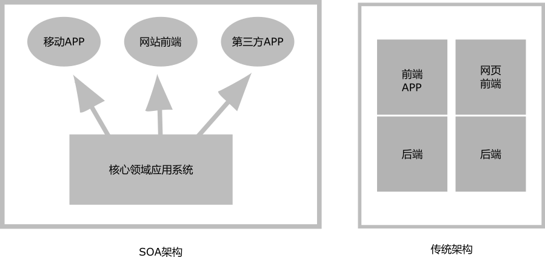

PHP APIs
PHP主要用于网站后端开发，它的API(Application Programming Interface)也可以叫做网络服务(Web services）。客户端调用服务器的API可以实现：
- 获取需要的资源，比如说从日历服务器端读取日程安排
- 完成期望的操作，比如说网站调用支付宝的支付接口完成收。
网络服务的底层依赖只有HTTP协议，目前备受欢迎的面向服务架构(SOA)就是建立在它的基础上的。把系统的子模块都构建成网络服务，这样就就能实现
- 高内聚: 划定系统边界，子模块只负责处理本领域相关的业务逻辑和数据。
- 模块化: 子系统之间通过API进行通信，根据需要完成的业务目标组合调用相应的子模块。
下图是传统网站与基于SOA框架构建的系统的对比。 
网络服务的组成部分
数据格式
客户端和服务端通信常用的数据格式包括:
- JSON: 起源于JavaScript，
json_encode用于把PHP数据进行JSON编码，json_decode把JSON解码成PHP数据 - XML: PHP有很多XML处理库，SimpleSML是简单易用的一个库
HTTP
发送HTTP请求
客户端需要发起HTTP请求调用服务端的代码。常用的方法有：
- cURL: PHP有
cURL库 - 在php.ini设置
allow_url_fopen之后可以使用fopen('url')的方式与服务端进行交互。使用stream_context_create可以扩展支持GET以为的HTTP请求。
其它
HTTP状态码表示当前请求的返回状态比如说500表示服务器端错误、200表示成功HTTP Headers：使用$_SERVER数组获取HTTP请求的的Header信息；header函数用于向客户端发送HTTP Header，在调用header函数之前不能有任何的输出。- 客户端使用
Accept请求头声明介绍的数据格式，而服务端使用Content-Type声明发送的数据格式 - 常用的HTTP动词包括
get, post, put, delete，对于RESTfull API比较重要 - 开发过程中使用
error_log或框架自带的log代码可以更好的调试HTTP请求相关代码，也可以使用postman或者wiresharp检测HTTP通信。
API类型
RPC也就是远程过程调用，应该分布式系统最常用的API类型了。它没有规定数据格式和HTTP的使用规范，所有的这些都需要系统开发者决定SOAP: 通常需要使用WSDL对服务进行规范描述。PHP提供了相关的库，比如SoapServer, SoapClient。RESTfull: 主要用于资源导向的网络服务，对于HTTP动词和URI都有相应的规范。- get: 读取资源
- post: 新建资源
- put: 更新资源（所有属性都需要传递）
- delete: 删除资源
网络服务设计原则
- 首先根据情况决定使用JSON还是XML进行通信
- 全面考虑与客户端交互的各种情境，对接收到的数据进行必要的处理，返回有意义的信息。
- KISS原则，单个服务模块不要提供过多的功能。这样可以提高项目成功率和降低维护成本
- 无论是对内还是对外提供服务都需要提供最新的、准确的文档。